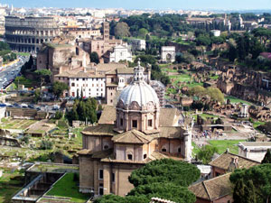
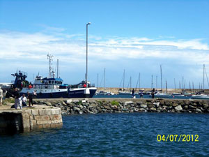

Traveling the World
Italy
My first trip that introduced me to the thrill of a new country. At this point I had visited many states in the United States but Italy was something completely different. For one, I needed to 13-hour flight to get there.
My parents took me on this trip as a graduation present. We booked a hotel in Rome for about a week and from there we traveled to Venice, Florence and other parts of Italy.
From little bakeries to street artists, I fell in love with the feel of Italy. The enriching culture and the sightseeing is to die for. I never wanted to leave.

Ireland

Ireland was inspired by the thrill of turning 18 years old. Three of my girlfriends and I decided that the summer after our 18 birthdays we were going to take a trip out of the country. A trip we would pay, plan and execute on our own with no help.
Well, it was a success. On July 1st, 2012 we went on a 17-day trip to the beautiful country of Ireland just us – four 18-year-old girls.
We learned so much from budgeting and responsibility to how different people are on the other side of the globe. An unforgettable experience to say the least.